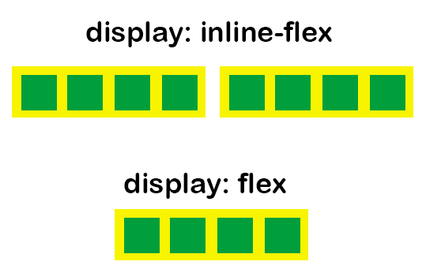

Div etiketleri blok elementlerdir.Yanda görüldüğü gibi, eğer 4 tane div yazarsak bunlar alt alta geleceklerdir.
Oluşturulan kutuların istenilen düzene sahip olabilmesi için float yöntemi de kullanılabilir
ancak bu
yazımızda esnek kutu modelinden yani flex yapısından bahsedeceğiz
Esnek Kutu Modeli için flex yapısı kullanılmaktadır. Dikeyde ve yatayda konumlandırma açısından kolaylık sağlamaktadır.
Yerlerini ayarlamak istediğimiz yapıyı kapsayan bir kapsayıcı div etiketine display:flex özelliği
verildiği zaman içerisindekileri
konumlandırmak çok daha kolay olacaktır.
Yukarıdaki örnek için, 4 adet div etiketini kapsayan bir div oluşturarak display:flex özelliği verdikten
sonra
bunlar yatayda hizalanmaktadır.
Bunun nedeni flex-direction özelliğinin default olarak row olmasından
kaynaklanmaktadır. Çünkü kutuları soldan sağa sıralar Eğer bunların
yukarıdan aşağıya doğru
olmasını row yerine column yazmamız gerekmektedir.

Flex-directionla yapılabildiği gibi display:flex-inline ile de kutuların yukarıdan aşağıya doğru
sıralanmasını sağlayabiliriz.
Flex-directionın bu iki özelliği dışında row-reserve ve column-reserve özellikleri bulunmaktadır. Aşağıdaki görsellerde örnekleri bulunmaktadır.
Esnek kutu içerisindeki öğeleri konumlandırabilmek için justify-content özelliğinden
yararlanacağız.
Uygulandığı kapsayıcının her öğesine bu işlemi yapacaktır. Flex-start, flex-end, center, space-between,
space-around ve space-evenly
olmak üzere 6 özellik bulunmaktadır.
flex-start: Kapsayıcı içindeki kutular baştan başlayarak dizilir.
flex-end: Kapsayıcı içindeki kutular sondan başlayarak dizilir.
center: Kapsayıcı içindeki kutular sondan başlayarak dizilir.
space-between: Kapsayıcı içindeki kutular arasındaki boşluk eşit olacak şekilde ilk kutu
başa son kutu sona dizilir.
space-around: Kapsayıcı içindeki kutular arasındaki boşluk eşit olacak şekilde dizilir.
space-evenly: Kapsayıcı içindeki kutular arasındaki boşluk eşittir fakat sol ve sağ
kısımlarda da boşluk olacak şekilde dizilir.